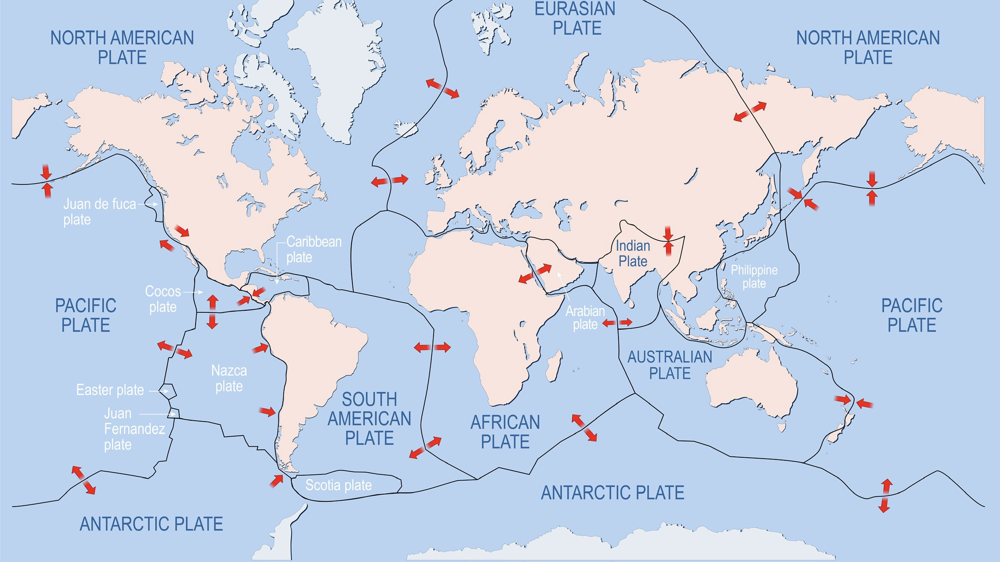
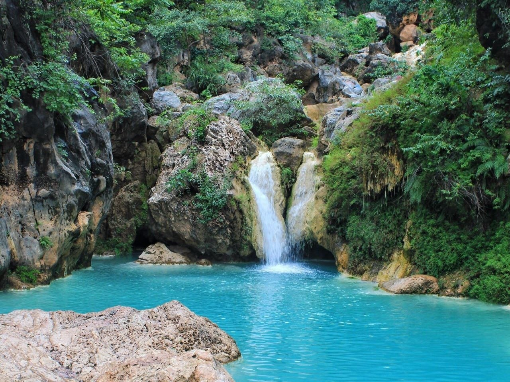
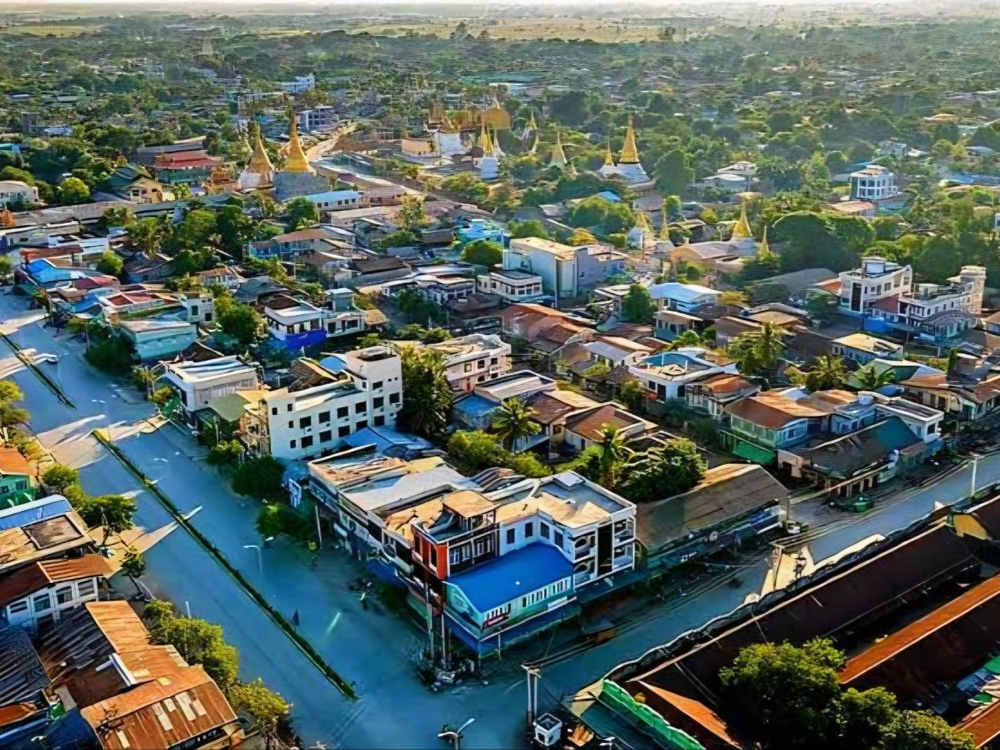
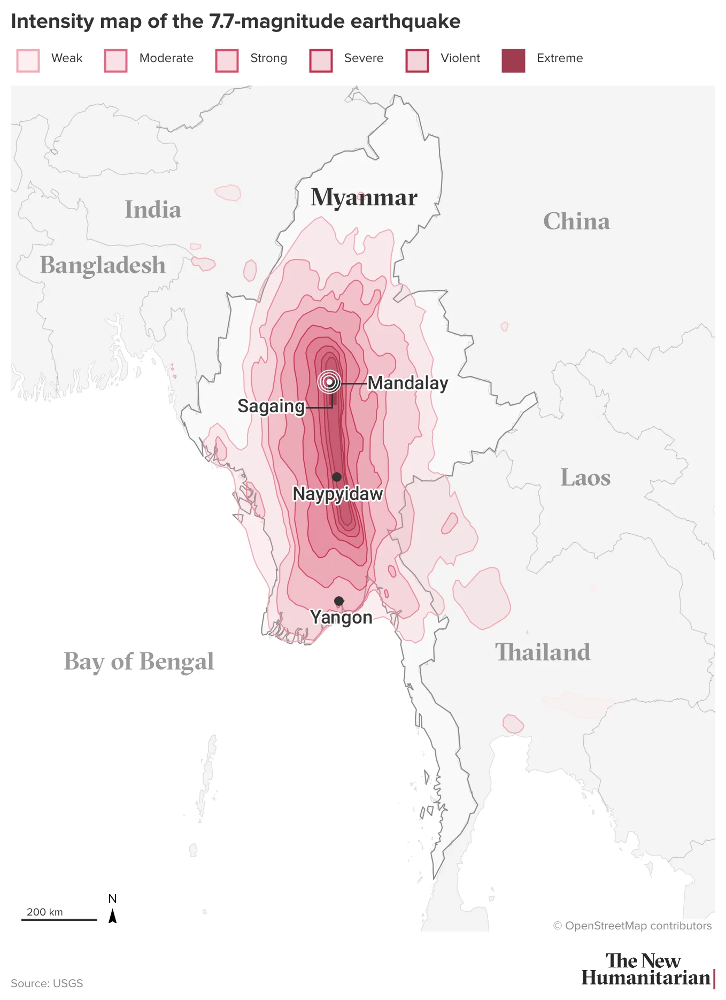

Discover simple ways to prepare for sudden natural disasters.
Why Myanmar is vulnerable to earthquakes
Why Myanmar is vulnerable to earthquakes
Earthquakes happen when energy is suddenly released beneath the Earth's surface. Most occur naturally,but certain human activities can also trigger earthquakes.
Tectonic plates move slowly, building stress along faults. When rocks suddenly slip,the released energy causes the ground to shake.
Volcanic activity can also cause earthquakes when magma moves beneath the Earth's surface.

Tectonic MovementMining activities, large dams, and underground fluid injection can sometimes change pressure beneath the Earth's surface and trigger earthquakes.
Myanmar is located near active fault lines. The Sagaing Fault is one of the country's major sources of earthquake hazards.
Earthquakes can damage buildings, cause injuries, affect families, and interrupt essential services. Their effects can continue long after the shaking stops.
Strong shaking can damage or destroy homes, schools, hospitals, roads, and bridges. Poorly constructed buildings are especially vulnerable to earthquake damage.
During the 2025 Myanmar earthquake, many buildings were damaged, leaving families without safe homes. This highlights the importance of earthquake-resistant construction.
Falling objects and damaged buildings can cause injuries. Damaged hospitals may also delay medical treatment.
Severe earthquakes can cause loss of life, especially in areas with vulnerable buildings and limited emergency services.
Families may lose their homes and access to clean water, electricity, food,communication, and other basic needs.
Damaged schools, workplaces, and roads can interrupt education, employment, transportation, and daily activities.
Sources: USGS, UNICEF Myanmar

Kyaukse
ShweboA severe earthquake can influence a high possible chance of earthquake hazards to these cities. It is important to understand the risks in these areas when it comes to earthquake-resistant infrastructure, emergency preparedness, and public awareness throughout the region.
In the past decade (2016 - 2025)
Magnitude 4.0 or higher
Within 186 mi (300 km) of Myanmar
Based on data from the past decade
11 earthquakes a month.
Once every 2 days.
On March 28th, 2025
Strongest one since 2000.
Mostly impacted Mandalay city.
Year with most earthquakes
Compared to other years since 2000.
142 M4+ earthquakes recorded.
Check out the best approach methods to use when facing unexpected sudden earthquake occurrence for your safety at our website.

Date & Time March 28, 2025 • 12:50 PM
Magnitude 7.7 Mw
Epicenter Near Sagaing, close to Mandalay
Focal Depth Approximately 10 km
Estimated
People affected
Around 31% of Myanmar's population based on 2025 population data.
Reported
people
Mandalay and Sagaing regions were among the hardest-hit areas.
Reported
people injured
Many residents had little time to respond to the unexpected shaking.
Reported
townships
Out of 330 townships nationwide, according to the sample figures.
All reports from United Nations Myanmar. (2025, April 05). "Situation Report #2: Earthquake in Central Myanmar 2025".